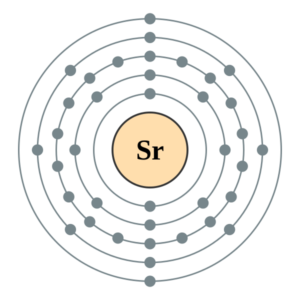

←
→
Strontium is the chemical element with symbol Sr and atomic number 38. An alkaline earth metal, strontium is a soft silver-white yellowish metallic element that is highly reactive chemically. The metal forms a dark oxide layer when it is exposed to air. Strontium has physical and chemical properties similar to those of its two vertical neighbors in the periodic table, calcium and barium. It occurs naturally mainly in the minerals celestine and strontianite, and is mostly mined from these. While natural strontium is stable, the synthetic 90Sr isotope is radioactive and is one of the most dangerous components of nuclear fallout, as strontium is absorbed by the body in a similar manner to calcium. Natural stable strontium, on the other hand, is not hazardous to health.
Both strontium and strontianite are named after Strontian, a village in Scotland near which the mineral was discovered in 1790 by Adair Crawford and William Cruickshank; it was identified as a new element the next year from its crimson-red flame test color. Strontium was first isolated as a metal in 1808 by Humphry Davy using the then-newly discovered process of electrolysis. During the 19th century, Strontium was mostly used in the production of sugar from sugar beet (see strontian process). At the peak of production of television cathode ray tubes, as much as 75 percent of strontium consumption in the United States was used for the faceplate glass. With the replacement of cathode ray tubes with other display methods, consumption of strontium has dramatically declined.